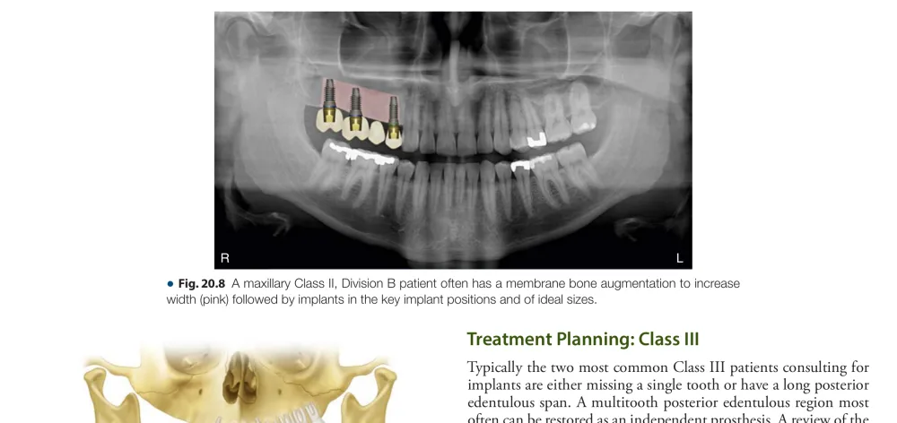
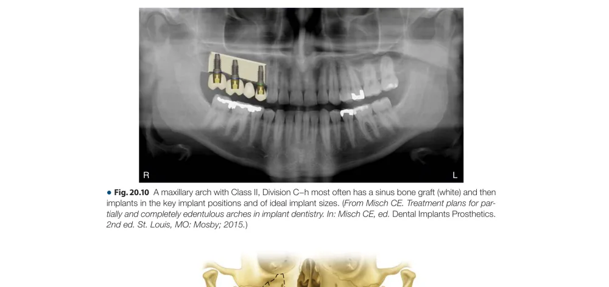

نسخه استخراجشده؛ ترجمه یا تأیید علمی انجام نشده است. وضعیت: captured
بیمار کلاس I دندانهای خلفی هر دو سمت را از دست داده و تنها دندانهای قدامی دارد. و این وضعیت یک مسیر پیشرونده است، نه یک حالت ثابت.
گام یکم — چرا این بیمار پارسیل میپوشد:
«بیمار کلاس I بیشتر از بیماران کلاس II یا III احتمال دارد پارسیل متحرک بپوشد، چون جویدن و/یا پشتیبانی یک پروتز متحرک مقابل، بدون پروتز مندیبل دشوارتر است.»
گام دوم — و اینجا یک بدهبستان زیبا هست که باید بفهمی:
پارسیل خلفی بافتنرمپشتیبان طوری طراحی میشود که یا نواحی بیدندان را بار کند یا دندانهای طبیعی قدامی را. و این یک معادلهی مجموعصفر است:
«طراحی کلاسپی که نیروی کمتری بر دندان وارد میکند (مثلاً کلاسپ میلهای)، در نهایت نیروی بیشتری بر استخوان وارد میکند. پارسیلهایی که نیروی بیشتری بر دندانهای تکیهگاه وارد میکنند (مثلاً پارسیلهای پرسیژن)، نیروی کمتری بر استخوان وارد میکنند.»
نیرو ناپدید نمیشود؛ فقط جابهجا میشود. هر طراحی کلاسپی، انتخاب میکند که چه چیزی را قربانی کند — دندان یا استخوان.
و نتیجهی هر دو مسیر یکسان است: «در هر دو حالت، پروتز متحرک اغلب تحلیل استخوان خلفی را تسریع میکند.»
گام سوم — پیامد انباشته:
«پارسیلی که بهخوبی طراحی یا نگهداری نشده، بارهای اضافی را به دندانهای تکیهگاه توزیع میکند و حتی ممکن است به سلامت پریودنتال ضعیف کمک کند. ترکیب این شرایط به تحلیل استخوان در نواحی بیدندان و تکیهگاههای طبیعی مجاور ضعیفتر میانجامد.»
و نتیجهی بلندمدت — که یک هشدار بالینی روشن است:
«بیماران کلاس I بلندمدت که پارسیل متحرک پوشیدهاند، اغلب ریجهای دیویژن C و دندانهای تکیهگاه متحرک نشان میدهند.»
این جمله را با یونیت ۲٫۳ کنار هم بگذار. آنجا آموختی که دیویژن C یعنی CHS بیش از ۱۵ میلیمتر و گزینههای پروتزی محدود. حالا میبینی که این وضعیت اغلب ساخته میشود، نه اینکه از ابتدا وجود داشته باشد.
و یک پیامد دوم که به دندانهای قدامی مربوط است:
«بیماران کلاس I اغلب دندانهای قدامی متحرک دارند، چون نبود بلندمدت پشتیبانی خلفی دوطرفه — ناشی از پوشیدن پارسیل بدجا یا اصلاً نپوشیدن آن — به اضافهبار دندانهای باقیمانده انجامیده است.»
و سه پیامد درمانی که از این وضعیت برمیآید:
یکم: «این بیماران اغلب به یک پروتز ایمپلنت خلفی نیاز دارند که از دندانهای طبیعی متحرک مستقل باشد.» — همان اصل استقلال از یونیت ۲٫۲، ولی اینجا با یک دلیل افزوده: همسایهها متحرکاند.
دوم: «طرح اکلوزال باید شرایط خاص دندانهای قدامی متحرک را در نظر بگیرد.»
سوم — و این کمّی است: «این نیازمند پشتیبانی ایمپلنتی بیشتر در بخشهای خلفی در مقایسه با بیشتر بیماران کلاس II یا III است، و نیز توجه و تناوب بیشتر برای تنظیمهای اکلوزال.»
پس بیمار کلاس I به ایمپلنت بیشتری نیاز دارد — نه بهدلیل استخوانش، بلکه بهدلیل ضعف دندانهای باقیماندهاش.
و یک نکتهی اکلوزالی: دندانهای قدامی باید حین حرکت مندیبل، پروتزهای ایمپلنت خلفی را دیسکلود کنند و از نیروهای جانبی محافظت کنند. ولی یک استثنا هست: «بسیاری از این بیماران کلاس I مندیبل در برابر یک دنچر ماگزیلا قرار دارند، که در آن حالت توازن دوطرفه مناسبتر است.»
به این استثنا دقت کن — همان اصل دیسکلوژن که در ماژول ۱ آموختی، در برابر دنچر مقابل وارونه میشود، چون دنچر به تماس دوطرفه برای ثبات نیاز دارد.

بیمار کلاس II دندانهای خلفی یک کوادرانت را از دست داده است. و این تفاوت ظاهراً کوچک، طرح درمان را عوض میکند.
نخست، دیویژن A: پروتز ایمپلنت مستقل معمولاً اندیکاسیون دارد، با دو یا چند ایمپلنت ریشهای برای جایگزینی مولرها.
و قاعدهی مقیاس: «هرچه شمار دندانهای غایب بیشتر، اندازه و/یا شمار ایمپلنتهای لازم بزرگتر.»
و یک قید اکلوزالی: «دندانهای قدامی در بیماران کلاس II باید در همهی اکسکورسیونها دیسکلوژن ایمپلنتهای خلفی را فراهم کنند.»
و برخلاف کلاس I، اینجا استثنای دنچر مقابل کمتر پیش میآید — چون بیمار کلاس II کمتر پارسیل میپوشد و قوس مقابلش اغلب دندان طبیعی دارد؛ دندانهایی که گاه به فضای بیدندان اکسترود شدهاند و پیش از ترمیم باید ارزیابی و اصلاح شوند.
و اکنون بخش عملی این درس — چهار گزینه برای بیمار کلاس II با دیویژن C (کمبود ارتفاع):
گزینهی یکم — و این ممکن است تعجبت را برانگیزد:
«در مندیبل، نخستین گزینهی درمان، استفاده نکردن از پشتیبانی ایمپلنت است، بلکه در نظر گرفتن یک پروتز پارسیل ثابت با کانتیلور خلفی که یک کراون به اندازهی پرمولر را جایگزین میکند، با استفاده از دو یا سه دندان قدامی بهعنوان تکیهگاه.»
یعنی نخستین گزینه، اصلاً ایمپلنت نیست — سادهترین گزینه است و وقتی تنها مولرها غایباند، بهشدت توصیه میشود. و به دو قید آن دقت کن: تنها یک کراون به اندازهی پرمولر (نه مولر) و دو یا سه دندان تکیهگاه (نه یکی).
و این با آنچه در یونیت ۳٫۱ دربارهی مولر دوم آموختی میخواند — آنجا هم دیدی که حتی وقتی مولر دوم را جایگزین میکنی، کراون را به اندازهی پرمولر بساز.
گزینهی دوم — افزایش استخوان:
«افزایش استخوان بیشتر اوقات در ماگزیلای کلاس II بهعنوان انتخاب نخست به کار میرود، جایی که گرافتهای سینوس با ترکیبی از آلوگرافت و استخوان اتوژن یک روش قابل پیشبینی است.»
به تفاوت دو فک دقت کن: در ماگزیلا گرافت انتخاب نخست است؛ در مندیبل پروتز ثابت کانتیلوردار انتخاب نخست است.
و دلیلش را در بحث کلاس III هم میبینی: «گرافت استخوان برای ارتفاع دشوار است، به مهارت افزوده نیاز دارد، و کمتر از ماگزیلا قابل پیشبینی است.»
یعنی گرافت سینوس در ماگزیلا قابل پیشبینی است، ولی افزایش ارتفاع در مندیبل خلفی نیست — و همین، ترتیب گزینهها را در دو فک وارونه میکند.
گزینهی سوم: «قرار دادن یک ایمپلنت سابپریوستئال یکطرفه کلاس II یا یک ایمپلنت دیسکی بالای کانال.»
گزینهی چهارم: «جابهجایی عصب و ایمپلنتهای اندوستئال در بیماران کلاس II که نامزدهای ضعیفی برای افزایش استخواناند.»
به ترتیب این چهار گزینه نگاه کن — نخست سادهترین (پروتز ثابت بدون ایمپلنت) و در پایان جابهجایی عصب، که خطر پارستزی بلندمدت، هایپراستزی و درد دارد و تنها برای بیمارانی است که نامزد ضعیفی برای افزایش استخواناند.
و یادت باشد که در یونیت ۳٫۱ آموختی مولر دوم مندیبل اغلب جایگزین نمیشود. پس در بیمار کلاس II با کمبود ارتفاع، پرسش واقعی اغلب این است: آیا اصلاً باید تا انتهای قوس رفت؟ — و پاسخ در گزینهی نخست، «نه» است.
